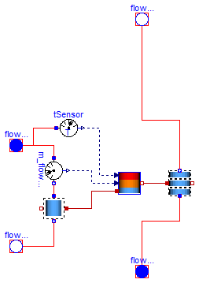

| Name | Description |
|---|---|
| Acumulador_Orden | Deposito acumulador cerrado. Estratificacion mediante ordenamiento de carga |
| Catalogo con las especificaciones de distintos depositos acumuladores | |
| Ejemplos de funcionamiento de depositos acumuladores de agua caliente | |
| Deposito acumulador de agua caliente con intercambiador integrado. Estratificacion mediante mezcla de volumenes |

| Type | Name | Default | Description |
|---|---|---|---|
| Integer | n | 2 | Numero de segmentos que se divide el volumen de control |
| Medium | medium | Modelica.Thermal.FluidHeatFl... | Fluido contenido en el deposito |
| Especificaciones | espec | Soltermica.Acumuladores.Cata... | Especificaciones del equipo |
| Temp_K | T_ini | 293.15 | Temperatura inicial de todo el deposito [K] |
| Type | Name | Description |
|---|---|---|
| FlowPort_a | flowPort_a | Entrada de agua fria de red |
| FlowPort_b | flowPort_b | Salida de agua caliente para consumo |
| FlowPort_a | flowPort_a1 | Entrada de agua caliente intercambiada |
| FlowPort_b | flowPort_b1 | Salida de agua menos caliente intercambiada |
model Acumulador_Orden
"Deposito acumulador cerrado. Estratificacion mediante ordenamiento de carga"
Modelica.Thermal.FluidHeatFlow.Interfaces.FlowPort_a flowPort_a(
final medium=medium) "Entrada de agua fria de red";
Modelica.Thermal.FluidHeatFlow.Interfaces.FlowPort_b flowPort_b(
final medium=medium) "Salida de agua caliente para consumo";
Modelica.Thermal.FluidHeatFlow.Interfaces.FlowPort_a flowPort_a1(
final medium=medium) "Entrada de agua caliente intercambiada";
Modelica.Thermal.FluidHeatFlow.Interfaces.FlowPort_b flowPort_b1(
final medium=medium) "Salida de agua menos caliente intercambiada";
Soltermica.ClasesBasicas.VolumenesControl.VolumenControlUnico volumenControl(
final Volumen=0,
final dP_nom=espec.dp_nom,
final cV_nom=espec.V_flow_nom,
final medium=medium);
Modelica.Thermal.FluidHeatFlow.Sensors.m_flowSensor m_flowSensor(
final medium=medium);
Modelica.Thermal.FluidHeatFlow.Sensors.TSensor tSensor(
final medium=medium);
Soltermica.ClasesBasicas.ControlesEquipos.Control_Acumulador_Orden
ControlEstratificacion(
final medium=medium,
final n=n,
final volumen=espec.volumen,
final altura=espec.altura);
Soltermica.ClasesBasicas.VolumenesControl.VolumenesControl1D
volumenesControl1D(
final n=n,
final medium=medium,
final volumen=espec.volumen,
final longitud=espec.altura,
final dp_nom=espec.dp_nom,
final V_flow_nom=espec.V_flow_nom,
final T_ini=T_ini);
parameter Integer n(min=2)=2
"Numero de segmentos que se divide el volumen de control";
parameter Modelica.Thermal.FluidHeatFlow.Media.Medium medium=Modelica.Thermal.FluidHeatFlow.Media.Medium()
"Fluido contenido en el deposito";
parameter Soltermica.Acumuladores.CatalogoEquipos.Especificaciones espec = Soltermica.Acumuladores.CatalogoEquipos.Especificaciones()
"Especificaciones del equipo";
parameter Modelica.SIunits.Temp_K T_ini=293.15
"Temperatura inicial de todo el deposito";
equation
connect(flowPort_a1, m_flowSensor.flowPort_a);
connect(m_flowSensor.flowPort_b, volumenControl.flowPort_a);
connect(volumenControl.flowPort_b, flowPort_b1);
connect(tSensor.flowPort, flowPort_a1);
connect(tSensor.y, ControlEstratificacion.T_in);
connect(m_flowSensor.y, ControlEstratificacion.m_flow);
connect(volumenControl.puertoInt, ControlEstratificacion.port_a);
connect(volumenesControl1D.flowPort_a, flowPort_a);
connect(volumenesControl1D.flowPort_b, flowPort_b);
connect(ControlEstratificacion.puertoInt, volumenesControl1D.puertoInt);
end Acumulador_Orden;